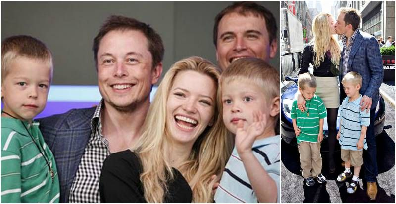

Elon Musk har varit gift tre gånger med två kvinnor. År 2000 gifte han sig med den kanadensiska författaren Justine Wilson. Paret fick en son som dog i plötslig spädbarnsdöd. Med hjälp av IVF fick de sedan tvillingsöner år 2004 och trillingar år 2006.
År 2008 separerade paret. År 2010 gifte han om sig med skådespelaren Talulah Riley. De skilde sig 2012, gifte om sig 2013 och skilde sig igen år 2016. Sedan 2018 har han ett förhållande med Claire Boucher, mer känd under artistnamnet Grimes.
I maj 2020 föddes parets son. När Musk medverkade i Saturday Night Live i maj 2021, berättade han att han har Aspergers syndrom.
